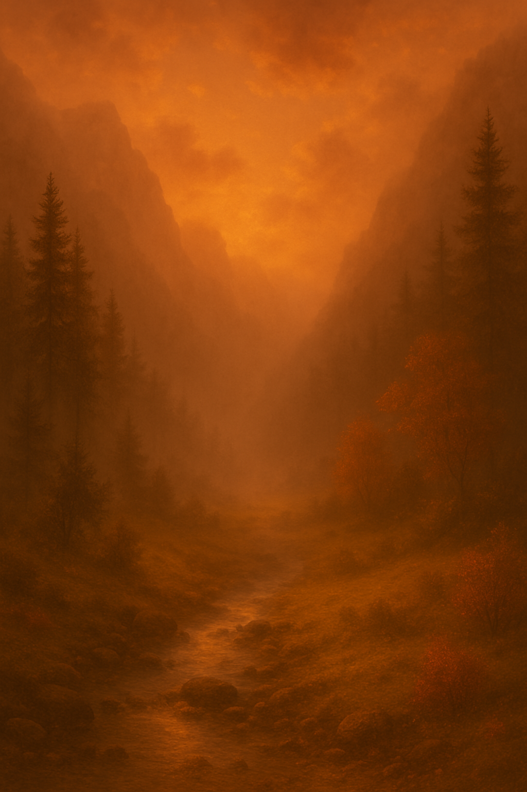

Az alkonyat narancsos fénye már alig szűrődik át a fák lombjain, mikor megérkezel a Szikrafalvi hegység egyik eldugott völgyébe. Itt, az omladozó kövek között rejtőzik a hírhedt Lángoló Kripta. A helyi legendák szerint a mélyben, kőbe zárva, ott pihen a Tűzkorona – egy mágikus ereklye, mely egykor a lángmágusok urát illette. A kőből faragott, repedezett bejárat kissé nyitva áll, mintha valaki nemrég járt volna odabent. Hideg szél csap ki belőle, mintha maga a halál lehelete szivárogna kifelé.
Ha bemégy a kriptába: menj a 2-es bekezdésre.